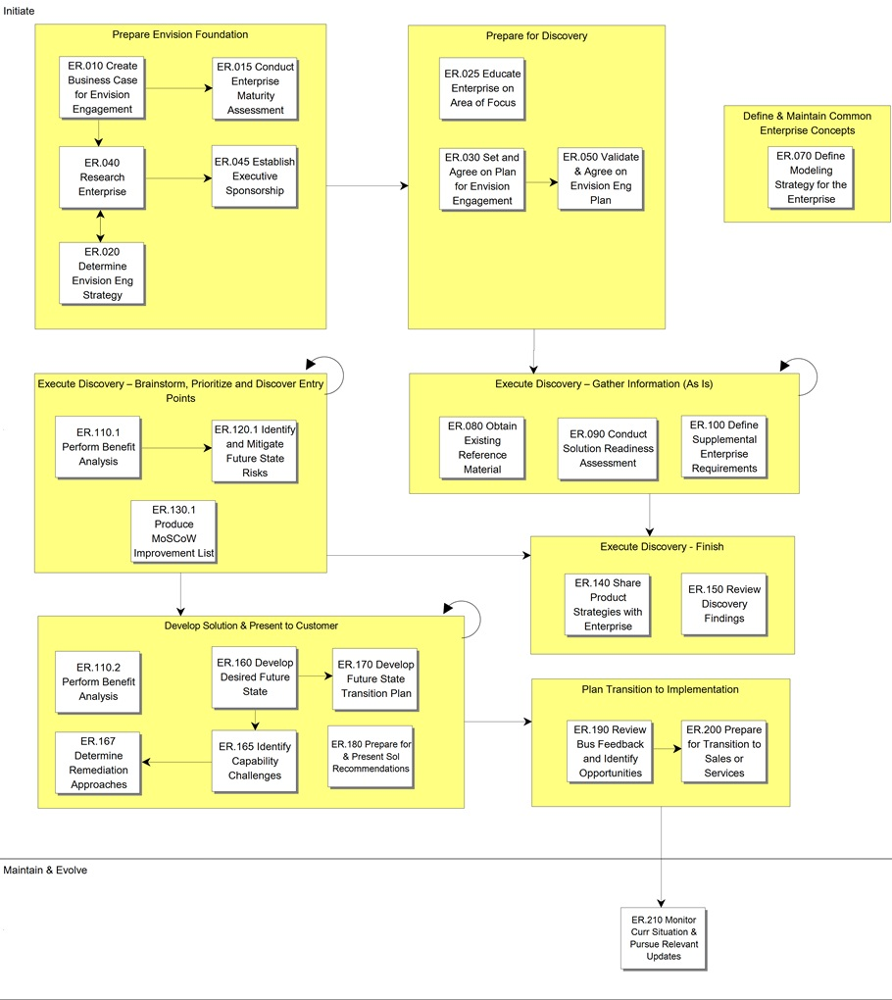

OUM |
Process Overview |
||
Method Navigation |
Current Page Navigation |
||
|
|
||||||||
The Envision Roadmap process accelerates project implementations by focusing on the key strategic and tactical areas that must be addressed in order to maximize the Enterprise's return on investment, while minimizing the business risk to ensure a successful completion of a project using Oracle technology.The overall focus is on definition and validation of business objectives and matching those objectives into recommended solutions possibly using the Oracle Suite of products where appropriate.
 This process overview is written from the perspective of a Full Method View, utilizing ALL of the activities and tasks in this process. Therefore, all of the following sections provide comprehensive information. If your project is utilizing a tailored approach (for example, Technology Full Lifecycle View, Application Implementation View, Middleware Architecture View), not everything in this overview may be appropriate for your project. Please keep this in mind, especially when reviewing the Key Work Products and Tasks and Work Products sections. You should use OUM as a guideline for performing all types of information technology projects, but keep in mind that every project is different and that you need to adjust project activities according to each situation. Do not hesitate to add, remove, or rearrange tasks, but be sure to reflect these changes in your estimates and risk management planning. You should also consider the depth to which you address and complete each task based on the characteristics of your particular project or project increment. See Oracle's Full Lifecycle Method for Deploying Oracle-Based Business Solutions for further information on the scalability and adaptability of OUM.
This process overview is written from the perspective of a Full Method View, utilizing ALL of the activities and tasks in this process. Therefore, all of the following sections provide comprehensive information. If your project is utilizing a tailored approach (for example, Technology Full Lifecycle View, Application Implementation View, Middleware Architecture View), not everything in this overview may be appropriate for your project. Please keep this in mind, especially when reviewing the Key Work Products and Tasks and Work Products sections. You should use OUM as a guideline for performing all types of information technology projects, but keep in mind that every project is different and that you need to adjust project activities according to each situation. Do not hesitate to add, remove, or rearrange tasks, but be sure to reflect these changes in your estimates and risk management planning. You should also consider the depth to which you address and complete each task based on the characteristics of your particular project or project increment. See Oracle's Full Lifecycle Method for Deploying Oracle-Based Business Solutions for further information on the scalability and adaptability of OUM.
This process flow for this process follows:

This section is not yet available.
The tasks and work products for this process are as follows:
| ID | Task | Work Product |
|---|---|---|
Initiate Phase |
||
ER.010 |
Create Business Case for Envision Enagement | Customer Envision Engagement Strategy |
ER.015 |
Conduct Enterprise Maturity Assessment | Maturity Analysis and Recommendations Report |
ER.020 |
Determine Envision Engagement Strategy | Envision Engagement Strategy |
ER.025 |
Educate Enterprise on Area of Focus | Educated Enterprise |
ER.030 |
Set and Agree on Plan for Envision Engagement | Envision Engagement Plan |
ER.040 |
Research Enterprise | Enterprise Research Findings |
ER.045 |
Establish Executive Sponsorship | Committed Executive Sponsorship |
ER.050 |
Validate and Agree on Envision Engagement Plan | Agreed on Envision Engagement Plan |
ER.070 |
Define Modeling Strategy for the Enterprise | Enterprise Modeling Strategy |
ER.080 |
Obtain Existing Reference Material | Existing Reference Material |
ER.090 |
Conduct Solution Readiness Assessment | Solution Readiness Assessment |
ER.100 |
Define Supplemental Enterprise Requirements | Supplemental Enterprise Requirements |
ER.110.1 |
Perform Benefit Analysis | Benefit Analysis |
ER.110.2 |
Perform Benefit Analysis | Benefit Analysis |
ER.120.1 |
Identify and Mitigate Future State Risks | Future State Risks |
ER.130.1 |
Produce MoSCoW Improvement List | MoSCoW Improvement List |
ER.140 |
Share Product Strategies with Enterprise | Informed Enterprise |
ER.150 |
Review Discovery Findings | Reviewed Discovery Findings |
ER.160 |
Develop Desired Future State | Desired Future State |
ER.165 |
Identify Capability Challenges | Current Capability Challenges |
ER.167 |
Determine Remediation Approaches | Remediation Approaches |
ER.170 |
Develop Future State Transition Plan | Future State Transition Plan |
ER.180 |
Prepare for and Present Solution Recommendation | Solution Recommendations |
ER.190 |
Review Business Feedback and Identify Opportunities | Opportunities Task List |
ER.200 |
Prepare for Transition to Sales or Services | Opportunities Action Plan |
Maintain and Evolve Phase |
||
ER.120.2 |
Identify and Mitigate Future State Risks | Future State Risks |
ER.130.2 |
Produce MoSCoW Improvement List | MoSCoW Improvement List |
ER.210 |
Monitor Current Situation and Pursue Relevant Updates | Monitored Current Situation |
This section is not yet available.
This section is not yet available.
This section is not yet available.
This section is not yet available.

Copyright © 2006, 2016, Oracle and/or its affiliates. All rights reserved.